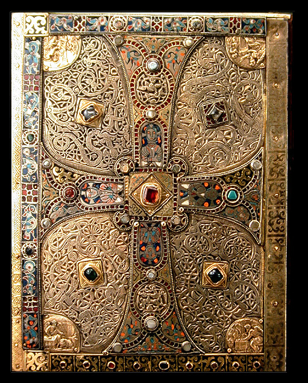

 |
Indiana University
Western
Europe in the Early Middle Ages
|
| Fall Semester 2010 | Dr. Deborah M. Deliyannis |
| Place: Ballantine Hall 236 | Office: Ballantine Hall 708 |
| Time: MWF 11:15 am - 12:05 pm | Office Hours: W 1:30-3:00 or by appt. |
| Section: 20269 (hist) and 27592 (mest) | Phone: 855-3431 |
| Webpage: / |
email: ddeliyan@indiana.edu |
Description
The Early Middle Ages (c. 400-1050 AD) was a time of dramatic cultural, political, and social change. In the year 400, the Roman empire was a political entity that embraced most of western Europe, as well as much of eastern Europe, the Levant, and North Africa. People belonged to a variety of different religious, cultural, and ethnic groups, but all coexisted under a common Roman administrative and social umbrella. In the year 1050, western Europe was divided into various different political units, but again shared similar sorts of economic and social institutions, and had a common religion centered on Rome. However, the eastern and southern Mediterranean areas had gone in very different directions. The civilization of 1050 was very different from that of 400; during these seven hundred years, Europe experienced invasion, conversion, and other upheavals that overturned the old Roman order and shaped entirely new systems. Europe in 1050 contained many of the political, cultural, religious, ethnic, and linguistic boundaries that we know today, and thus the Early Middle Ages can be regarded as the period in which the foundations of modern western society were put into place. We will be examining the different ways that Roman, Germanic, Christian, and Islamic traditions interacted to produce this new world.
The following are the requirements for this course:
Attendance 7%
Four 5-7 page papers 40% (10% each)
Participation in debate 10%
Midterm exam 17%
Final exam 26%
Class meetings will consist of lecture, discussion, and group activities. Readings from the textbooks are assigned in order to provide background and supplementary material to what happens in class. Many classes will consist of in-depth examinations of a particular topic, and it is thus essential that you have read the textbook assignment BEFORE each class. I will not necessarily be providing a lot of background information in lectures, but I will assume that you have read the textbook for this information.
For some classes, additional material is also assigned. It is very important that you do the reading BEFORE the class for which it is assigned. Discussion, group activities, debates, and other types of exercises will take place at various points in the semester, and you will need to be prepared for these.
Instructions for the papers may be found below. Each paper must be turned in in class on the day that it is due; in that class meeting, we will discuss the book. After the beginning of class on which a paper is due, the paper will be considered late (i.e. if you don't attend class but just show up at the end). Late papers will be marked down one letter grade for every day that they are late.
On four days we will have a debate in which members from the class participate. You will be assigned to one team of 4-5 students for one debate. ASSIGNMENTS WILL BE MADE AT THE THIRD CLASS MEETING. You are required to meet with your team at least one time before the debate. You will be graded individually on your participation, and each person will have ample opportunity to participate. A website has been created for each debate, with the debate topic, readings (or links to readings), images, and other materials. Further instructions for the debates can be found below.
The midterm and final exams will be a combination of short identifications and essays (they may also include a map section). They will be open-note tests; you may NOT however use books or photocopies. It behooves you, therefore, to attend class and take good notes; also to take good notes on readings and other materials. Because this form of test is often difficult for people who haven't taken one before, practice questions will be made available three weeks before the midterm. You may turn these in to see how you might have done, although they will not count toward your class grade.
Readings
We will use the following as the textbook for the class (a copy has been placed on 4-hour reserve in the Kent Cooper Room of Wells Library). Note that the first edition of this book is missing one chapter, so make sure you have the 2nd edition, or at least be aware that you will have to read that chapter on reserve.
Roger Collins, Early Medieval Europe 300-1000, 2nd ed. (New York: Palgrave MacMillan, 1999).
There are also four full-length books assigned; all can be purchased in the bookstore (copies have been placed on 4-hour reserve in the Kent Cooper Room). PLEASE BE SURE THAT YOU HAVE A COPY OF THE BOOK IN TIME TO READ THE WHOLE THING BEFORE THE PAPER IS DUE!
St.
Augustine, Confessions,
trans. Garry Wills (Penguin, 2008).
The Lombard Laws, translated with an introduction by Katherine Fischer Drew (University of Pennsylvania Press, 1973).
Charlemagne's Courtier: the Complete Einhard, translated by Paul Edward Dutton (University of Toronto Press, 1998).
The
Complete
Works of Liudprand of Cremona,
translated by Paolo Squatriti (Catholic University of America Press,
2007).
*
* * *
* * *
* * *
* * *
* * *
* * *
* * *
* * *
* * *
Instructions
for Papers
General instructions
Each of the books that we are reading for this class is of a different
type: Christian autobiography, legal code, biography, miracle
stories,
and narrative history. I would like you to begin to understand
how
history can be written based on these various different types of
source;
therefore you will be writing on the same topic for each paper, and
there will
be an essay question on the final exam in which you are expected to
summarize
your results.
Some general comments on the papers:
* Papers should be typed/word processed, and should be of a length equivalent to 5-7 double-spaced pages, with settings of 1 inch margins (top, bottom, and sides) and 12-point font.
* When you quote or paraphrase any part of any written text, either these books or any other published material, you must provide the appropriate reference, either in footnotes or endnotes. Failure to provide adequate references is considered plagiarism, which I am required to report to the Office of Student Ethics. If you have any question about your use of sources, it is better to be on the safe side and provide a reference. If you have questions about what constitutes plagiarism, see the section on academic misconduct at
http://www.iu.edu/~code/code/responsibilities/academic/index.shtml
* Don't be afraid of including your own opinions about what is in
the
book; the purpose of the exercise is to make you react to the book and
what it
is about.
Hints on writing a paper:
* Introduction. These are fairly short papers. It is essential for a good paper that you have a strong introduction that clearly explains what you are going to discuss, and what your conclusion will be. That way, each paragraph makes sense in the context of the whole argument. Don't let it be a surprise to the reader! One effective way to do this is to have the concluding sentence of the first paragraph be: "In this paper I will show that . .[put your conclusion here] . ." Don't be afraid of using such a sentence! That is not the only way to do it, but it works.
* Be sure to include dates in the introduction, both the date the text was written, and the date of the events described in the text (if they are different).
* Use of source. Be SURE to provide SPECIFIC QUOTES from the source, appropriately referenced, for every point you make. Don't just generalize about what it says; that is not the right way to go about proving your point.
* Don't waste time summarizing the plot or history of the text; or if you want to provide a summary, it should be no more than one paragraph long.
* If you are quoting a passage that is more than 3 lines long, it should be set as a block quote: indented and single-spaced.
Topic
for papers
You are to write on the topic:
Daily
life and material culture in the early middle ages
Some
topics you might like to consider are:
- houses and their furnishings
- food and drink
- urban or rural environment
- dress and clothing
- objects that people owned
- anything else related to
an
individual's daily material needs
You
should address SOME of these questions, whichever seem most
relevant/interesting to you; you do not need to address all of them,
and in
fact you might address different ones in different papers.
You will write on this topic for all four papers; it has been chosen because there is information in all the sources for you to use (although you may have to dig for it!).
For each paper, write an essay in which you discuss the topic. What kind of information does this text provide? Are you able to form a good picture of the subject in question from this source? Do any things that you read surprise you?
You should consider, if appropriate, what biases or problems there might be with the text, so that the picture it presents might not be complete or accurate. For example, do you come away with a good overall picture of your topic, or only of one facet of it? Be sure to include specific quotes from the text to explain each of your points.
When I say that you should be quoting from the text, I mean the part of the text that was written in the Middle Ages. Of course you may read the introduction to each text, and the notes; in fact, I encourage you to do so, as it will give you a better sense of the text. But the parts you should really concentrate on are the texts themselves.
DEBATES - GENERAL
INSTRUCTIONS
Note that there is no term-paper for this class. The debate is an opportunity for you to examine one issue in more depth than simply reading a book and reacting to it. I expect that for your debate you will be well-prepared, knowledgable about the historical background and the issue itself, and able to argue a case. You are not required to do huge amounts of research, but you should at a minimum be very familiar with everything provided on the debate webpage. Pay particular attention to the primary sources, on which you should base your argument.
Since this is a group
activity, you are required to meet with members of your debate team at
least one time prior to the class meeting in which the debate will take
place. This meeting will be arranged by the Course Assistant;
please contact her with questions.
The debate will take
the place of lecture on a given topic
for that day; thus, debaters will be responsible for providing
background
material on their subjects (from the textbook, for example) as well as
arguing
their side. Background material
assignments are made on the debate webpage. At
a minimum you should present the relevant material from
the textbook, in such a way that it forms a useful introduction to the
debate.
You may certainly use additional materials if you like.
The background material is intended to give everyone in the class the necessary background to understand what the debate is about. It covers what the primary sources are that you are using, what the background to the issues is, and what the main outline of the issue was. As such, you should be prepared to speak for about 4-5 minutes for EACH item of background. You should certainly include names and dates. If you are in doubt as to whether you are clear enough, practice on a roommate and ask if he/she understands! You might find it helpful to have this material written out and just read it (that is perfectly fine), if you are nervous speaking from notes, or if you think you might forget some of it. Or you can speak from notes if you feel more comfortable doing so.
EVERYONE IN THE CLASS SHOULD LOOK AT THE DEBATE MATERIALS AND READ THE ASSIGNMENT IN THE TEXTBOOK for that day; this material will not otherwise be covered in lecture, but you will be expected to know it for the tests.
Each debate assignment will consist of seven or eight parts. You must prepare all the parts, as you do not know which part(s) you will be called upon to present. In addition to the presentation and argumentation stages of the debate, there will also be counter-argument for which you should be prepared to speak on the spot. You will be graded INDIVIDUALLY on how well you do on the part that you were called on to present, AND how you do in counter-arguments and conclusions. I will NOT be grading you on your debating skills, so if you have never debated before, that is not a problem.
Note that in order to create a solid argument for your side, you will have to figure out what the opposing side's arguments might be so that you can plan what your counter-argument will be. You will be expected to present a solid and detailed argument for your side, using background and other information.
People often ask what the difference between the presentation of the proposition and the arguments is. The presentation of the proposition should include a statement of what the proposition is, an explanation of what is involved, and a brief summary of the overall theme of how it is going to be argued. Do not go into detail about the individual arguments at this time; that will be done when the arguments are presented.
The structure of each debate will be the following:
I. Presentation of the background material
A. Team 1
B. Team 2
II. Presentation of the proposition
A, Team 1
B. Team 2
III. Main arguments: three for each side, in detail, including quotes from primary sources
A. Team 1
B. Team 2
IV. Counter-arguments
A. Team 1
B. Team 2
V. Summaries: summarize your arguments, rebut the arguments of the main team, state why your argument is preferable
VI. Vote by the class